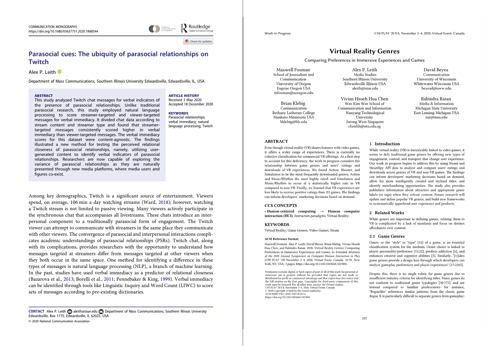
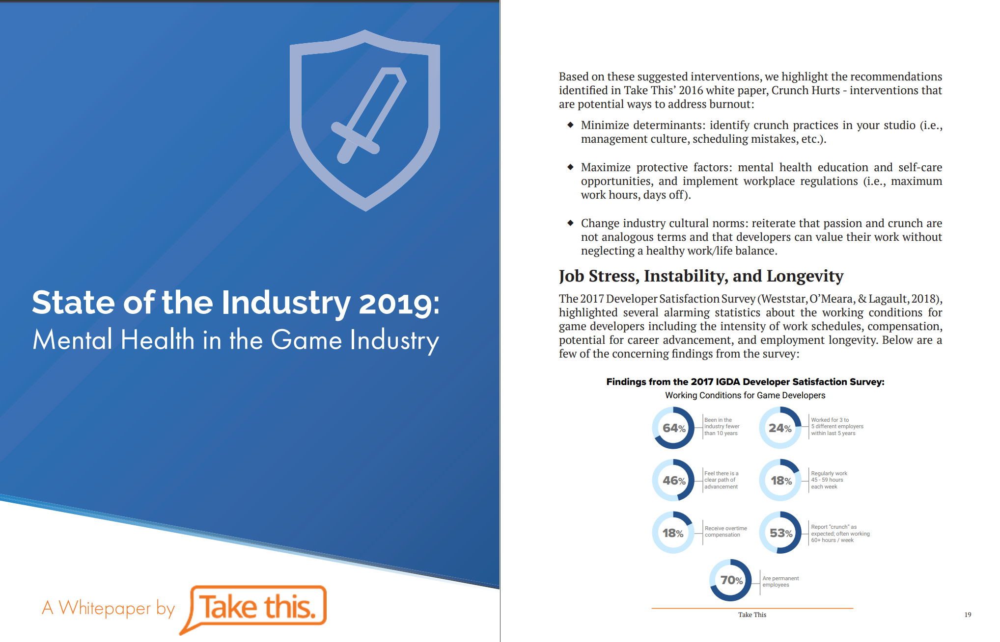

Chapter 3 Research Papers
3.1 How to Find Research Papers
There are many ways to find research papers, both paid and free. Here are a few popular methods:
Use a specialized search engine.
Specialized search engines are designed to search for specific types of information, such as research articles. Here are some tips on how to use a specialized search engine to find research articles:
Choose the right search engine. There are many specialized search engines available, so it is important to choose one that is relevant to your topic. Some popular specialized search engines for research articles include:
Google Scholar
PubMed
Web of Science
Scopus
IEEE Xplore
ACM Digital Library
Use keywords. When you are searching for research articles, it is important to use keywords that are relevant to your topic. You can use the same keywords that you would use for a general search engine, but you may also need to use more specific keywords.
Use advanced search features. Most specialized search engines have advanced search features that allow you to narrow down your search results. For example, you can specify the publication date, the language, or the type of document.
Read the results carefully. Once you have found some research articles, take some time to read them carefully. This will help you identify the articles that are most relevant to your research.
Evaluate the quality of the sources. Not all sources are created equal. When you are evaluating the quality of a research article, consider the following factors:
The author’s credentials
The publication date
The journal’s reputation
The methodology used
The findings of the study
By following these tips, you can use a specialized search engine to find research articles that are relevant to your topic and of high quality.
Here are some additional tips for using a specialized search engine to find research articles:
Use quotation marks to search for exact phrases. For example, if you are looking for articles about the “impact of social media on mental health,” you would search for “impact of social media on mental health.”
Use Boolean operators to combine keywords. Boolean operators, such as AND, OR, and NOT, can be used to combine keywords and narrow down your search results. For example, if you are looking for articles about the “impact of social media on mental health” in the journal “Nature,” you would search for “impact of social media AND mental health AND Nature.”
Use filters to narrow down your results. Most specialized search engines allow you to filter your results by publication date, language, and other criteria. This can be helpful if you are looking for specific types of research articles.
Use the search engine’s help documentation. Most specialized search engines have help documentation that can provide you with more information about how to use the search engine.
I hope these tips help you find the research articles you are looking for.
Check your university library.
Your university library has a wealth of resources that you can use to find research articles. Here are some tips on how to use your university library to find research articles:
Talk to a librarian. Librarians are experts in finding information. They can help you choose the right databases and search strategies for your research.
Use the library’s online catalog. The library’s online catalog is a searchable database of all the books, journals, and other materials that the library owns.
Use the library’s databases. The library subscribes to a variety of databases that contain research articles. These databases can be searched by keyword, author, or subject.
Ask for help from a research assistant. Many libraries have research assistants who can help you find research articles.
Search for preprints.
A research preprint is a preliminary version of a research paper that is made available online before it has been peer-reviewed and published in a journal. Preprints are often used by researchers to share their work with the wider community and to get feedback on their findings.
Preprints can be a valuable resource for researchers, as they can provide access to the latest research findings before they are published. They can also help researchers to get feedback on their work and to collaborate with other researchers.
However, it is important to keep in mind that preprints have not been peer-reviewed and may contain errors. Therefore, it is important to evaluate the quality of the preprint carefully before citing it in your own research.
Here are some of the advantages of using preprints:
Faster dissemination of research findings. Preprints can be made available online much faster than traditional journal articles, which can take months or even years to publish. This allows researchers to share their work with the wider community more quickly and to get feedback on their findings.
Increased collaboration. Preprints can be a valuable tool for collaboration, as they allow researchers to share their work with other researchers before it has been published. This can help to identify potential errors and to improve the quality of the research.
Reduced publication bias. Preprints can help to reduce publication bias, which is the tendency for journals to publish research that supports the authors’ hypothesis. This is because preprints are not subject to the same peer-review process as journal articles, and therefore, they are more likely to be published regardless of the findings.
Here are some of the disadvantages of using preprints:
Unreviewed research. Preprints have not been peer-reviewed, which means that they may contain errors. Therefore, it is important to evaluate the quality of the preprint carefully before citing it in your own research.
Potential for plagiarism. Preprints are publicly available, which means that there is a potential for plagiarism. Therefore, it is important to give credit to the original authors of the research when you cite a preprint.
Legal issues. There are a number of legal issues that can arise with the use of preprints. For example, it is important to make sure that you have the right to share the preprint and that you are not violating the authors’ copyright.
Search preprint repositories. There are a number of preprint repositories that you can search, such as:
arXiv
bioRxiv
medRxiv
PeerJ Preprints
PsyArXiv
SocArXiv
Use specialized search engines. There are also a number of specialized search engines that can be used to find preprints, such as:
Preprints.org
ASAPbio
PreLights
Publons
When using preprints, it is important to keep in mind that they have not been peer-reviewed and may contain errors. Therefore, it is important to evaluate the quality of the preprint carefully before citing it in your own research.
Here are some things to consider when evaluating a preprint:
The author’s credentials
The methodology used
The findings of the study
The potential for bias
Contact experts in your field.
There are a few ways to use experts in your field to find research articles:
Talk to your professors or advisors. Your professors and advisors are likely to be familiar with the latest research in your field. They can recommend research articles that you should read and can also help you to identify experts in your field.
Attend conferences and workshops. Attending conferences and workshops is a great way to meet experts in your field and to learn about the latest research. You can also ask experts for recommendations for research articles.
Read research blogs and newsletters. There are many research blogs and newsletters that are written by experts in various fields. These can be a great way to stay up-to-date on the latest research and to find research articles that are relevant to your interests.
Use social media. As mentioned earlier, you can use social media to connect with experts in your field and to find research articles. You can follow researchers and research institutions on Twitter, LinkedIn, and other social media platforms. You can also join research groups and communities on social media.
Here are some specific things you can do to find experts in your field:
Search for experts by name or by topic. There are many online directories that list experts in various fields. You can search for experts by name or by topic.
Look for experts who have published research articles in your field. You can use a specialized search engine, such as Google Scholar, to find research articles that have been published in your field. The authors of these articles are likely to be experts in your field.
Look for experts who have given presentations at conferences or workshops in your field. You can find information about conferences and workshops on the websites of professional organizations.
Look for experts who are active on social media. As mentioned earlier, you can use social media to connect with experts in your field. You can follow researchers and research institutions on Twitter, LinkedIn, and other social media platforms. You can also join research groups and communities on social media.
When using experts in your field to find research articles, it is important to be respectful of their time. When you reach out to an expert, be sure to explain why you are interested in their research and what you are looking for. Be sure to also thank the expert for their time and consideration.
3.2 How to Read Research Papers
There are many different approaches to reading a research paper, but these are some of the most effective ones.
The three-pass approach.
The three-pass approach to reading a research paper is a method of reading a paper in three stages, each with a specific goal.
The first pass. This is a quick scan to capture a high-level view of the paper. You should read the title, abstract, and introduction carefully, and then skim the rest of the paper, paying attention to the headings and subheadings. The goal of this pass is to get a general understanding of what the paper is about, its main points, and its contributions to the field.
The second pass: This is a more detailed reading of the paper. You should read the introduction and conclusion carefully, and then read the rest of the paper in more detail, paying attention to the methods, results, and discussion. The goal of this pass is to understand the paper’s arguments and evidence, and to assess its strengths and weaknesses.
The third pass: This is a critical reading of the paper. You should read the paper carefully, taking notes and challenging the author’s assumptions and conclusions. The goal of this pass is to fully understand the paper and to be able to critically evaluate its claims.
The question-based approach.
The question-based approach to reading a research paper is a method of reading a paper by asking questions about the paper as you read. This approach can help you to focus your reading and to ensure that you understand the key points of the paper.
Here are some questions that you can ask yourself as you read a research paper:
What is the purpose of the paper?
What are the main questions that the paper addresses?
What are the key findings of the paper?
How does the paper contribute to the existing body of knowledge?
What are the strengths and weaknesses of the paper?
How does the paper relate to my own research interests?
You can also ask more specific questions that are relevant to the specific paper that you are reading. For example, if you are reading a paper about a new medical treatment, you might ask questions about the safety and effectiveness of the treatment.
The question-based approach can be used in conjunction with the three-pass approach to reading a research paper. In the first pass, you can ask general questions about the paper to get a sense of what it is about. In the second pass, you can ask more specific questions to understand the paper in more detail. In the third pass, you can critically evaluate the paper by asking questions about its methods, findings, and conclusions.
The question-based approach is a flexible method that can be adapted to your own needs and preferences. By asking questions as you read, you can improve your understanding of research papers and your ability to critically evaluate their claims. The question-based approach is a valuable tool for reading and understanding research papers. By asking questions as you read, you can improve your comprehension and critical thinking skills.
The active reading approach.
Active reading is a method of reading that involves engaging with the text in a thoughtful and critical way. It is different from passive reading, which is simply reading the text without thinking about it.
Active reading can be used to read any type of text, but it is especially important for reading research papers. Research papers are often dense and technical, so it is important to be actively engaged in order to understand them.
Here are some tips for active reading:
Ask questions: As you read, ask yourself questions about the text. What is the author’s purpose? What are the main points? What evidence does the author provide to support their claims?
Take notes: Taking notes can help you to remember the key points of the text and to track your progress. You can take notes in the margins of the text, or you can use a separate notebook.
Summarize: After each section of the text, summarize the key points in your own words. This will help you to solidify your understanding of the text.
Discuss the text with others: Talking to others about a text can help you to gain new insights and perspectives.
Annotate the text: Annotating the text means making notes and comments in the margins. This can help you to highlight important passages, ask questions, and make connections between different parts of the text.
Use a highlighter: Highlighting important passages can help you to focus your attention and to remember the key points of the text.
Take a break: Don’t try to read a research paper in one sitting. Take breaks to refresh your mind and to come back to the text with fresh eyes.
Active reading takes time and effort, but it is a valuable skill for anyone who wants to learn and grow. By actively reading research papers, you can improve your comprehension, critical thinking skills, and ability to learn new things.
The collaborative reading approach.
This approach involves reading the paper with a partner or group of people. This can be helpful for getting different perspectives on the paper and for identifying areas where you need clarification.
No matter which approach you choose, it is important to take your time and read the paper carefully. Research papers can be dense and challenging, but they can also be very rewarding. By taking the time to read them carefully, you can learn a lot about your field and contribute to the advancement of knowledge. The question-based approach is a valuable tool for reading and understanding research papers. By asking questions as you read, you can improve your comprehension and critical thinking skills.
3.3 How to Write Research Papers
There are many different approaches to writing a research paper, but some of the most effective ones include:
Choose an interesting topic you know.
This is the most important factor, as you will be spending a lot of time researching and writing about your topic. If you are not interested in the topic, it will be difficult to stay motivated. You should also make sure your topic is relevant to your field of study or to your career goals. This will make it easier to find sources and to write a research paper that is valuable to others. Don’t choose a topic that is too broad or too narrow. A good research topic should be specific enough to be manageable, but broad enough to allow for some exploration. I also recommend that you choose a topic that has been studied before. This will make it easier to find sources and to get started on your research. However, you can also choose a topic that is new or emerging, as long as you are prepared to do the necessary research. If you find it difficult finding a topic, you can talk to an expert, such as a professor or independent researcher. They can help you choose a research topic that is appropriate for your level of study and that meets the requirements of your assignment.
One approach you can take is brainstorming a list of potential topics. Write down any topics that you are interested in or that you think would be interesting to research. You may also need to do some preliminary research. Once you have a list of potential topics, do some preliminary research to see how much information is available. You can use online databases, library catalogs, and search engines to find relevant sources. If you already chose a topic but you are having a hard time making progress, do not be afraid to change your topic. It is perfectly normal to change your research topic as you learn more about the subject. If you find that your original topic is not as interesting or manageable as you thought, don’t be afraid to change it. For this purpose, I recommend starting your project early enough to make a change. You should also know that you do not need to make a full topic change. A minor change may suffice.
Do your research thoroughly.
Read as many relevant research papers as you can and take good notes. This will help you to develop a strong understanding of the topic and to form your own arguments. It will help if you use a variety of sources. Don’t rely on just one or two sources. Look for information from a variety of sources, including books, articles, websites, and interviews. When choosing between different sources, evaluate your sources critically. Not all sources are created equal. Be sure to evaluate the quality of your sources before you use them. Consider the author’s credentials, the purpose of the source, and the date of publication. While you are collecting and verifying these sources, take notes carefully.
As you gather information, be sure to take careful notes. This will help you keep track of your sources and the information you have found. All the collected information must be synthesized. Once you have gathered a lot of information, it’s time to synthesize it. This means putting the information together to form a coherent argument. This stage of the research is not always easy. I recommend that you be patient. It takes time to do thorough research. Don’t expect to find all the answers overnight. It is also necessary to be persistent. Don’t give up if you don’t find the information you’re looking for right away. Keep searching until you find what you need.
Write a clear and concise thesis statement.
A thesis statement is a sentence that summarizes the main point of your essay. It should be clear, concise, and arguable. You must first start with a strong research question. What do you want to learn about? What are you trying to prove or disprove? Next, narrow down your focus. Don’t try to cover too much ground in your essay. Focus on one specific aspect of your research question. Once you have narrowed down your focus, further refine it so that you can state your main point clearly. What is the one thing you want your readers to take away from your essay?
Your newly created thesis statement must be arguable. Your thesis statement should be a claim that can be supported with evidence from your research. Finally, it must be concise. Your thesis statement should be one or two sentences long.
Here is an example of a clear and concise thesis statement:
- The rise of social media has led to an increase in cyberbullying among teenagers.
This thesis statement is clear because it states the main point of the essay in a concise and direct way. It is also arguable because it is a claim that can be supported with evidence from research.
Here is an example of a thesis statement that is not clear:
- Social media has had a big impact on teenagers.
This thesis statement is not clear because it does not state the main point of the essay in a specific way. It also does not make a claim that can be supported with evidence.
Here is an example of a thesis statement that is not concise:
- The rise of social media has had a profound impact on the lives of teenagers, both positive and negative. It has led to an increase in communication and social interaction, but it has also led to an increase in cyberbullying and other forms of online harassment.
This thesis statement is not concise because it is too long and wordy. It could be improved by making it more specific and by narrowing down the focus.
Organize your paper carefully.
Organizing your paper carefully is essential for writing a clear and concise paper that is easy to read and understand. The best place to start is with an outline. An outline will help you organize your thoughts and ideas before you start writing. It will also help you make sure that your paper has a logical flow. You should use headings and subheadings in your outline that can be easily transferred to your full paper. Headings and subheadings will help your readers quickly scan your paper and find the information they are looking for. When fleshing out your outline, you should use transition words and phrases. Transition words and phrases will help your readers follow your train of thought and make sure that your paper flows smoothly. Before you submit your paper, proofread it carefully. Before you submit your paper, proofread it carefully for any errors in grammar, spelling, or punctuation.
If you have a thesis statement already, but are having a hard time starting with your outline or writing, you can start by brainstorming your main points. What are the main points you want to make in your paper? Once you have a list of your main points, you can start to organize them into an outline. Your main points should then be presented in a logical order. When you are organizing your paper, it is important to use a logical order. This means that your main points should flow from one to the next in a logical way. It is not uncommon to revise your outline during that stage, so do not be afraid to revise your outline. As you write your paper, you may need to revise your outline. This is perfectly normal. The outline is just a tool to help you organize your thoughts, and it is not set in stone. At any stage, you can get feedback from others. Once you have a draft of your paper, get feedback from others. This could be your professor, a tutor, or a friend. Feedback from others can help you identify any areas where your paper can be improved. If you are afraid of other people reading your full paper, you can give them pieces of the paper, an early draft, or an outline. By giving them a small, rough portion of the paper, it can make it easier to handle suggestions since you know it is not yet meant to be perfect.
Write in a clear and concise style.
Writing in a clear and concise style is paramount for a research paper, as it ensures that complex ideas are communicated effectively to the readers. To achieve this, several key strategies should be employed. First, focus on crafting well-structured sentences that convey one main idea each. Avoid excessive use of jargon and technical terms, opting instead for plain language that is easily understandable. Additionally, make use of active voice to enhance readability and directness in your writing.
Paragraphs should be organized logically, starting with a clear topic sentence that introduces the main point of the paragraph. Follow this with supporting sentences that provide evidence, examples, or explanations related to the topic. Ensure a smooth flow by using transitional words and phrases to connect ideas between sentences and paragraphs.
In terms of length, aim for paragraphs that are neither too short nor too long. A paragraph ideally consists of 3-5 sentences, but this can vary depending on the complexity of the topic and the depth of discussion required.
Lastly, edit and revise your writing diligently. Remove any redundant or repetitive information, eliminate unnecessary adjectives or adverbs, and tighten your sentences. Use concise language to express your ideas without sacrificing clarity. By following these guidelines, you can produce a research paper that is both easily comprehensible and intellectually rigorous.
Use evidence to support your arguments.
Using evidence effectively to support your arguments is crucial for building a strong and convincing case. Start by clearly stating your argument or thesis in a topic sentence at the beginning of the paragraph. This sets the stage for what you will be discussing.
Next, introduce your evidence in a way that demonstrates its relevance to your argument. This could involve citing credible sources such as academic studies, statistics, expert opinions, or real-world examples. Make sure the evidence is directly related to the point you’re trying to make and supports the overall message of your paper.
After introducing the evidence, provide context or explanation to help your readers understand how the evidence supports your argument. Avoid assuming that the significance of the evidence is immediately clear; instead, guide your readers through the connection between the evidence and your argument. This might involve explaining the methodology behind a study, interpreting statistics, or describing the circumstances of a specific example.
Once you’ve presented the evidence and its context, analyze it in relation to your argument. Explain why the evidence is relevant and how it reinforces your thesis. Discuss any patterns, trends, or insights that emerge from the evidence. This is the heart of your paragraph, where you demonstrate the logical connection between the evidence and your argument.
Conclude the paragraph by summarizing the main points you’ve made and reiterating how the evidence supports your overall argument. This helps reinforce the reader’s understanding of the relationship between the evidence and your thesis.
Remember to maintain a balance between the amount of evidence and the amount of analysis. Too much evidence without analysis can make your writing feel disjointed, while too much analysis without evidence can weaken your argument’s credibility. By following this structure, you can effectively integrate evidence to bolster your arguments and enhance the persuasiveness of your research paper.
Proofread your paper carefully.
Proofreading is an extremely important step in ensuring the quality and accuracy of your research paper. To effectively proofread your work, consider the following tips. Begin by taking a break after completing the initial draft; distancing yourself from the content will allow you to approach the paper with fresh eyes. When you’re ready to proofread, start by checking for grammatical errors, including punctuation and spelling mistakes. Carefully review each sentence to ensure proper subject-verb agreement, consistent verb tenses, and accurate word choices.
Pay special attention to sentence structure and clarity. Long, convoluted sentences can confuse readers, so consider breaking them into smaller, more digestible ones. Read your paper aloud to identify awkward phrasing or unclear passages; if it doesn’t sound right when spoken, it might need revision.
Check your formatting to ensure consistency throughout the paper. Verify that headings, font styles, spacing, and citations adhere to the required style guide (e.g., APA, MLA).
Focus on the flow of your argument. Ensure that each paragraph logically connects to the next, and that your ideas progress in a coherent manner. Check that your transitions are smooth, guiding the reader through your paper seamlessly.
Review your in-text citations and reference list to confirm that all sources are properly credited and formatted correctly. Mistakes in citations can harm your paper’s credibility.
Consider seeking feedback from peers or mentors. A fresh perspective can reveal issues you might have missed. Proofreading tools like grammar checkers can also be helpful, but use them judiciously, as they may not catch every mistake.
Finally, read your paper multiple times, focusing on one aspect (e.g., grammar, clarity, citations) during each read-through. This targeted approach can help you catch different types of errors.
Ultimately, thorough proofreading ensures that your research paper is polished, clear, and effectively communicates your ideas to your readers.
Additional Tips
Here are some additional tips for writing a research paper:
Start early. Don’t wait until the last minute to start writing your paper. This will give you enough time to do your research thoroughly and to write a well-organized paper.
Get feedback from others. Ask a friend, family member, or professor to read your paper and give you feedback. This can help you to identify areas where your paper can be improved.
Don’t be afraid to revise. It is important to revise your paper multiple times before you submit it. This will help you to improve your writing style and to make sure that your paper is error-free.
Take breaks. Don’t try to write your paper in one sitting. Take breaks to clear your head and to come back to it with fresh eyes.
Academic Examples
There are many different ways to report research in academia. Some of the most common methods include:
Research papers: Research papers are the most common way to report research in academia. They are typically published in academic journals and are written in a formal style.
Conference papers: Conference papers are presented at academic conferences. They are typically shorter than research papers and are written in a more informal style.

Theses and dissertations: Theses and dissertations are written by graduate students to complete their degree requirements. They are typically longer and more comprehensive than research papers.
Books: Books are another way to report research. They are typically written by experts in a particular field and can be a good way to communicate research to a wider audience.
Reports: Reports are written for a specific audience, such as a government agency or a business. They are typically shorter than research papers and focus on a specific topic.
Presentations: Presentations are a way to share research with a live audience. They can be given at conferences, workshops, or other events.

Blogs and social media: Blogs and social media can be used to share research with a wider audience. They are a good way to communicate research in a more informal way.
The best way to report research depends on the specific research project and the intended audience. However, all of these methods can be effective ways to communicate research findings and to contribute to the academic community.
Industry Examples
There are many different ways to report research in industry. Some of the most common methods include:
White papers: White papers are a type of report that is commonly used in industry to present research findings to a specific audience. They are typically written in a clear and concise style and focus on a specific topic.

Executive summaries: Executive summaries are a brief overview of a white paper or other research report. They are typically written for senior executives and other decision-makers.
Presentations: Presentations are a way to share research findings with a live audience. They can be given at company meetings, conferences, or other events.
Blogs and social media: Blogs and social media can be used to share research findings with a wider audience. They are a good way to communicate research in a more informal way.
Press releases: Press releases are a way to share research findings with the media. They are typically written in a clear and concise style and focus on the key findings of the research.
Technical reports: Technical reports are a detailed document that describes the research methods and findings. They are typically written for a technical audience.
The best way to report research in industry depends on the specific research project and the intended audience. However, all of these methods can be effective ways to communicate research findings and to contribute to the industry community.
Sections of an Academic Paper
Title: The title should be clear, concise, and informative. It should accurately reflect the main topic of the paper and be interesting enough to grab the reader’s attention. When titling a paper, it should be no more than 12 words. You only capitalize the first words and proper nouns. If you include a semi-colon, the first word after the semi-colon is considered a first word. You should also bold, center, and double-space the title.
Abstract: The abstract should be concise and informative, summarizing the main points of the paper in a way that is easy to understand. It should be written in the past tense and should not include any citations. The abstract should be a concise and informative summary of the paper, typically 150-250 words long. It should state the purpose of the study, the methods used, the main findings, and the conclusions.
Introduction: The introduction should provide background information on the topic, define the research problem, and state the research question or hypothesis. It should also provide a brief overview of the paper’s organization. You should also include an overview of the structure of your paper, including key findings.
Literature review: The literature review should discuss the relevant research that has been done on the topic. It should identify the gaps in the literature and explain how the current study will contribute to knowledge. The literature review should be objective and should not include any personal opinions or biases.
Methods: The methods section should describe how the research was conducted. It should include information on the participants, the materials and procedures used, and the data analysis methods. The methods section should be clear and concise, and should be written in the past tense.
Results: The results section should present the findings of the study. It should be organized and easy to follow, and should use tables and figures to illustrate the data. The results section should be objective and should not include any interpretations or conclusions.
Discussion: The discussion section should interpret the results of the study and relate them to the literature. It should also discuss the limitations of the study and suggest directions for future research. The discussion section should be thoughtful and insightful, and should be written in the present tense.
References: The references section should list all of the sources that were cited in the paper. It should be formatted according to the style guide that is being used (e.g., APA, MLA, Chicago).
3.4 How to Cite Research Papers
3.4.1 Why Citing is Important
Citing sources in a research article serves several critical purposes. Firstly, it is a matter of academic integrity and ethical conduct. When you cite sources, you give credit to the original authors and researchers whose work has informed or influenced your own. This acknowledgment is not just a formality but a way to show respect for the intellectual contributions of others. Failing to give proper credit can lead to accusations of plagiarism, a serious breach of academic ethics.
Secondly, proper citation helps you avoid plagiarism by clearly distinguishing between your own ideas and those borrowed from others. Plagiarism can have severe consequences, both academically and professionally, tarnishing your reputation and credibility.
Citations also play a crucial role in supporting the claims and arguments presented in your research. By referencing reputable sources, you provide evidence and credibility to your work, enhancing its persuasiveness and reliability. This helps readers assess the validity of your assertions and the strength of your research.
Furthermore, citing sources connects your research to the broader academic discourse. It demonstrates how your work fits into the existing body of knowledge and contributes to the advancement of your field. This contextualization is essential for readers to understand the significance and relevance of your research.
Proper citations facilitate the peer review process, a cornerstone of academic research. When your sources are accurately cited, reviewers can assess the quality and reliability of your research more effectively. This transparency is crucial for maintaining the standards of academic rigor.
Citations also provide readers with the opportunity to delve deeper into related concepts, methodologies, and findings by referring to the cited sources. This additional context can enrich their understanding of your research and encourage further exploration.
Ethically, citing sources is a fundamental responsibility in research. It demonstrates your commitment to conducting honest and responsible research, adhering to established ethical standards in your field. It also promotes transparency and accountability in the dissemination of knowledge.
In addition to ethical considerations, proper citation helps prevent the spread of misinformation. By referencing credible sources, you ensure that the information presented in your research is accurate and trustworthy, contributing to the overall quality of scholarly work.
Finally, citing a range of sources acknowledges the diversity of perspectives and ideas within your field. This inclusivity enriches your research, demonstrating a comprehensive understanding of the subject matter and showing that you have considered various viewpoints.
In conclusion, citing sources in a research article is not just a technical requirement; it is a fundamental practice that upholds academic integrity, supports your arguments, connects your work to the academic community, and contributes to the responsible dissemination of knowledge.
Two Types in APA
The American Psychological Association (APA) style is a popular format for citing sources in academic papers. Here are the basic steps on how to cite research papers using APA:
In-text citations.
In-text citations are used to give credit to the sources you used in your paper. They are placed in parentheses after the information you are citing, and they include the author’s last name, the year of publication, and the page number(s) where the information can be found. For example, if you are citing a quote from a book by John Smith, published in 2023, on page 100, your in-text citation would look like this: (Smith, 2023, p. 100).
Reference list.
The reference list is a list of all the sources you used in your paper. It is placed at the end of your paper, and it is organized alphabetically by the author’s last name. Each entry in the reference list includes the author’s name, the year of publication, the title of the source, the publication information, and any other relevant information. For example, the reference list entry for the book by John Smith would look like this:
Smith, J. (2023). The Psychology of Learning. New York, NY: Oxford University Press.
Here is the template for each of the typical types of APA citations. Please review the APA website or Purdue’s Writing Lab (OWL) for additional help with APA 7th.
Book.
Author, A. A. (Year of publication). Title of work: Capital letter also for subtitle. Publisher Name. DOI (if available)
Chapter in an Edited Book.
Author, A. A., & Author, B. B. (Year of publication). Title of chapter. In E. E. Editor & F. F. Editor (Eds.), Title of work: Capital letter also for subtitle (pp. pages of chapter). Publisher. DOI (if available)
Journal article.
Lastname, F. M., & Lastname, F. M. (Year). Title of article. Title of Periodical, Vol.(Issue), page numbers. DOI
Website.
Lastname, F. M. (Year, Month Date). Title of page. Site name. URL
Dissertation.
Lastname, F. M. (Year). Title of dissertation/thesis (Publication No.) [Doctoral dissertation/Master’s thesis, Name of Institution Awarding the Degree]. Database or Archive Name.
Report by Government Agency.
Organization Name. (Year). Title of report. URL
Report by Individual.
Lastname, F. M., & Lastname, F. M. (Year). Title of report. Organization Name. URL
Tweet.
Lastname, F. M. or Name of Group [@username]. (Year, Month Date). Content of the post up to the first 20 words[Tweet]. Site Name. URL
Additional Tips
Here are some additional tips for citing research papers using APA:
Use a consistent style.
Using a consistent citation style in a research paper is crucial for several reasons. Firstly, it enhances the readability and professionalism of your work by ensuring uniform formatting throughout the paper, making it easier for readers to find and understand source information. This consistency contributes to a polished and credible presentation. Secondly, it demonstrates your competence and attention to detail as a researcher, showcasing your commitment to following established conventions, which is vital when submitting work to journals or academic institutions with specific style requirements. Moreover, a uniform citation style fosters clarity in academic communication, eliminating confusion caused by variations in formats. It also aids in the peer review process, helping reviewers assess citations efficiently and promoting fairness and transparency in academic discourse. Lastly, it saves time and effort in writing and editing, making it especially valuable for larger research projects. In summary, consistent citation style improves readability, professionalism, and clarity, demonstrates competence, aids in peer review, fosters fairness and transparency, and streamlines the research process, enhancing the overall quality and credibility of your work.
Carefully check your citations.
Careful citation checking in academic and research writing is vital for several reasons. Firstly, it upholds scholarly integrity by preventing plagiarism and ensuring proper attribution to original sources. This practice helps avoid severe academic and professional consequences associated with ethical breaches. Secondly, it enhances the credibility of your work by providing evidence and support for your claims through accurate citations, fostering trust among readers. Thirdly, meticulous citation checking improves the clarity and coherence of your writing, benefiting peer reviewers and readers alike. Additionally, it ensures adherence to specific style guidelines, reflecting attention to detail and professionalism. Checking citations also plays a role in preventing the spread of misinformation, contributing to responsible knowledge dissemination and field integrity. Lastly, it serves as a practical step in the editing process, allowing for error correction and showcasing your commitment to high-quality research. In sum, citation checking is a fundamental practice that supports academic integrity, credibility, readability, adherence to guidelines, misinformation prevention, and overall research quality.
Use a citation management tool.
Citation management software provides several benefits for researchers and scholars. It simplifies the organization and formatting of citations, making it easier to collect and manage references from various sources. This saves time and reduces the risk of errors in citations and bibliographies. The software also automates citation and bibliography formatting according to different styles, streamlining the process and ensuring consistency. Collaboration is facilitated through features for sharing reference libraries, enhancing productivity for team projects. Integration with word processing software simplifies citation insertion and bibliography generation. Additionally, the software can import citation information from databases, keeping you updated with the latest research. Backup and synchronization features ensure the security and accessibility of your reference library across devices.